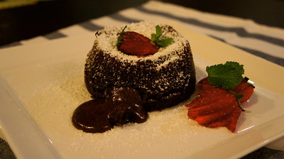

Lava Cake

Description
This decadent chocolate lava cake features a warm, gooey center that flows out with every bite. Topped with powdered sugar, fresh strawberries, and a sprig of mint, it’s an elegant dessert perfect for special occasions or indulgent nights in.
Ingredients
- Dark chocolate
- Butter
- Eggs
- Sugar
- Flour
- Strawberries and Powdered Sugar (for garnish)
Instructions
- Melt chocolate and butter together until smooth.
- Whisk eggs and sugar, then combine with the chocolate mixture.
- Fold in flour gently until just mixed.
- Pour into ramekins and bake until edges are set but center is molten.
- Invert and serve warm, garnished with strawberries, mint, and powdered sugar.
- Serve hot, add vanilla ice cream if you prefer à la mode.
Home